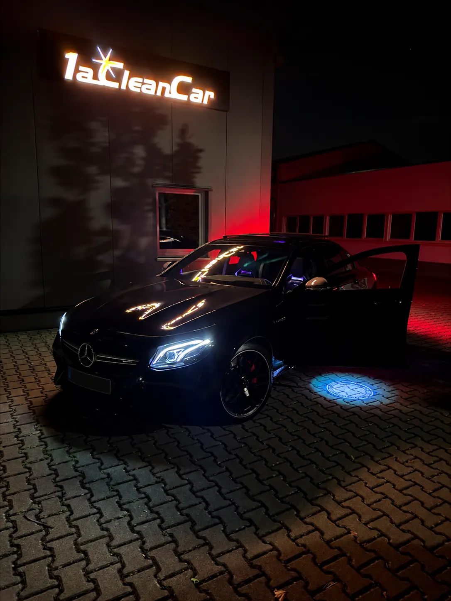
Fahrzeugpflege mit Liebe zum Detail
Autoaufbereitung in Walldorf 1a Clean Car
Frischer Innenraum, gepflegter Lack, sauberer Motorraum: Wir bereiten Ihr Fahrzeug sorgfältig auf – vom Alltagsauto bis zum Sportwagen.
- 5-Sterne-Bewertungen auf Google
- Kurzfristige Termine möglich
- Persönliche Beratung
Unsere Leistungen
Autopflege, Aufbereitung & mehr
Was Ihr Fahrzeug braucht, besprechen wir persönlich mit Ihnen. Hier finden Sie unsere wichtigsten Leistungen.

Fahrzeugaufbereitung
Innen und außen mit Liebe zum Detail – von der Pflege bis zur Komplettaufbereitung.
Mehr erfahren →
Innenreinigung
Sitze, Fußraum, Kofferraum und Cockpit gründlich gereinigt.
Mehr erfahren →
Ozonbehandlung
Gegen Rauch-, Tier- und andere hartnäckige Gerüche im Innenraum.
Mehr erfahren →
Motorraumwäsche
Gründliche, schonende Reinigung und Pflege des Motorraums.
Mehr erfahren →
Lack, Karosserie & Dellen
Lackierarbeiten, Karosserie-Instandsetzung und Dellentechnik.
Mehr erfahren →
Unfallservice & Mietwagen
Wir koordinieren Gutachten, Versicherung und Reparatur – und Sie bleiben mobil.
Mehr erfahren →Alle Leistungen ansehen – auch Reifenwechsel, Windschutzscheibe und Trockeneisreinigung.
Pflegepakete
Pflege, die den Unterschied macht
Vom täglichen Begleiter bis zum Lieblingsstück: Wählen Sie die Pflege, die zu Ihrem Fahrzeug passt.
Paket
Innenreinigung
Für einen Innenraum, in dem man gerne Platz nimmt.
- Saugen von Sitzen und Fußraum
- Reinigung von Oberflächen
- Pflege von Cockpit und Einstieg
Innen & außen
Komplettpflege
Innen und außen – ein frischer Start für Ihr Auto.
- Innenreinigung und Außenpflege
- Abgestimmt auf den Fahrzeugzustand
- Ideal vor Verkauf oder Leasingrückgabe
- Pflege nach individuellem Bedarf
Paket
Außenpflege
Sauber bis ins Detail. Für einen gepflegten Auftritt.
- Schonende Fahrzeugwäsche
- Reinigung von Felgen und Scheiben
- Pflege der äußeren Oberflächen
Vorher & Nachher
Der Unterschied liegt im Detail
Spuren des Alltags zeigen sich überall: im Fußraum, im Kofferraum, an den Felgen und in schwer erreichbaren Ecken. So sehen echte Fahrzeuge vor und nach unserer Aufbereitung aus.
 VorherNachher
VorherNachher Vorher
Vorher Nachher
Nachher Vorher
Vorher Nachher
Nachher Vorher
Vorher Nachher
Nachher Vorher
Vorher Nachher
NachherEinblicke
Besondere Fahrzeuge. Besondere Pflege.
Bei 1a Clean Car bekommt jedes Fahrzeug die Aufmerksamkeit, die es verdient. Mehr Einblicke gibt es auf Instagram.
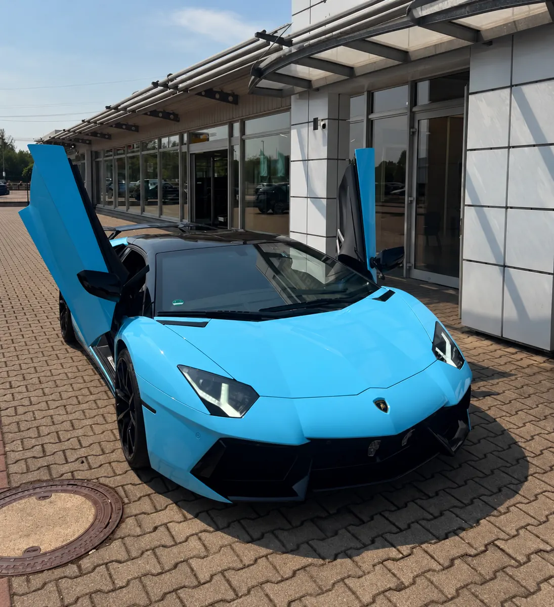
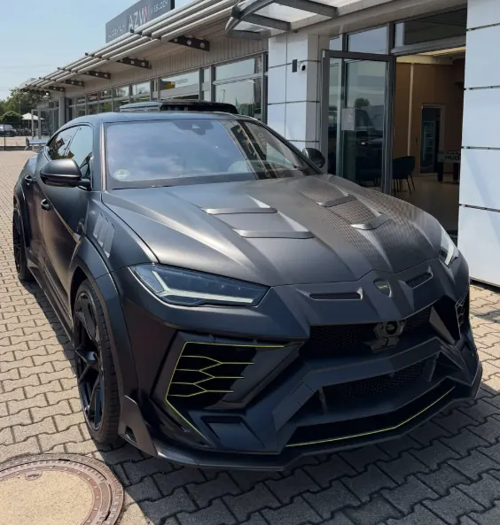
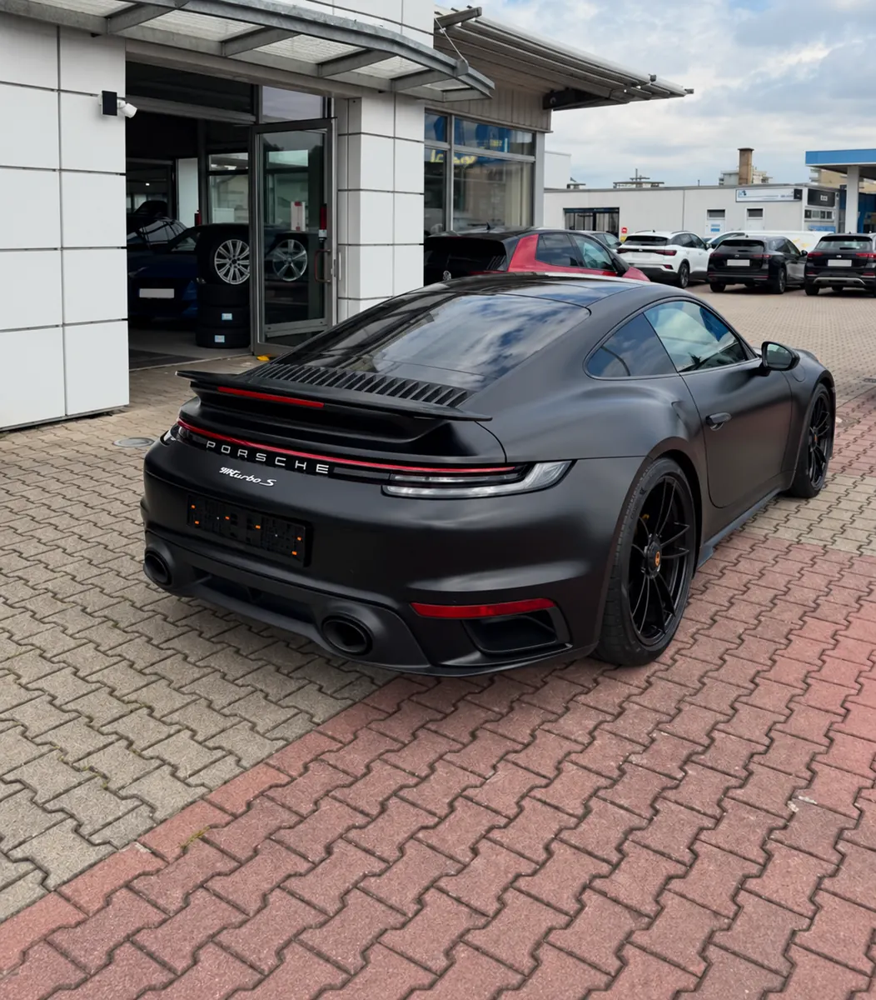
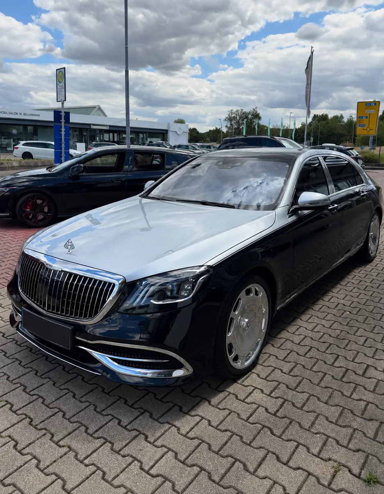
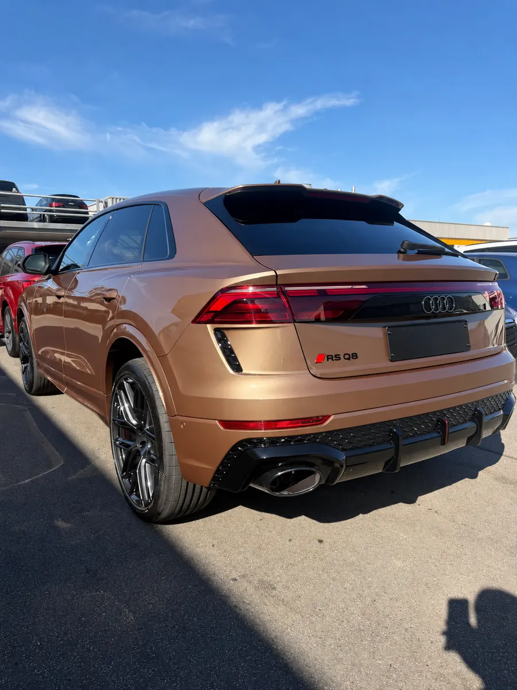
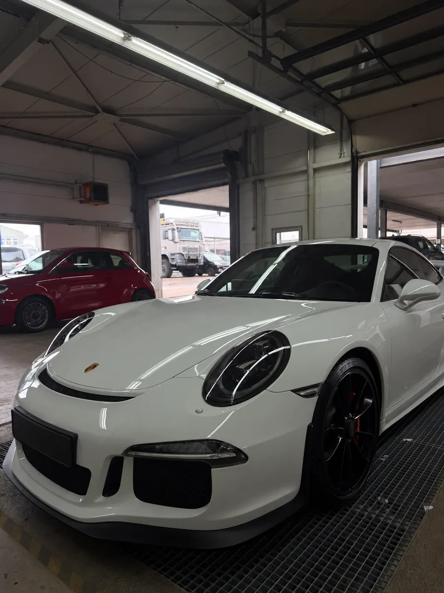
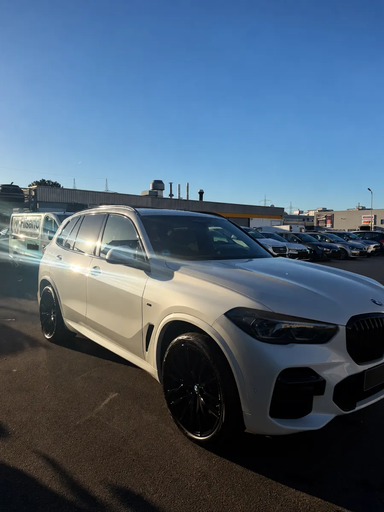
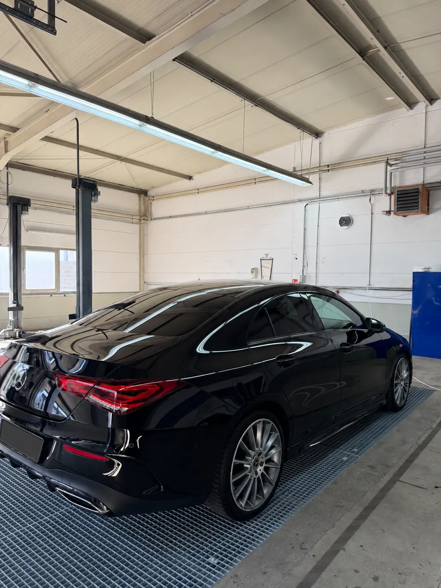
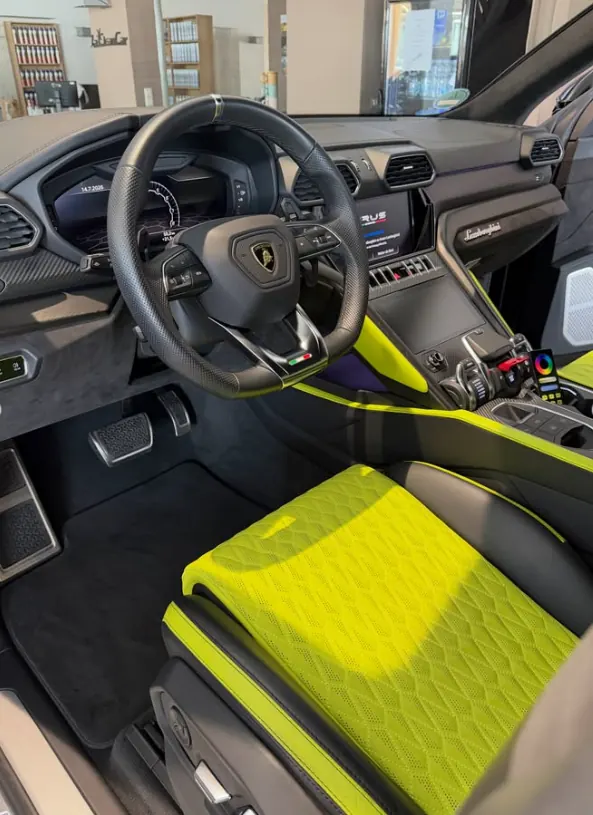
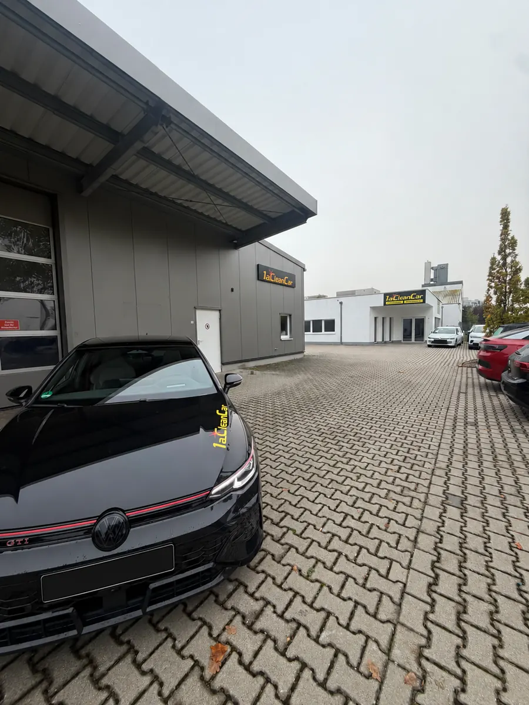
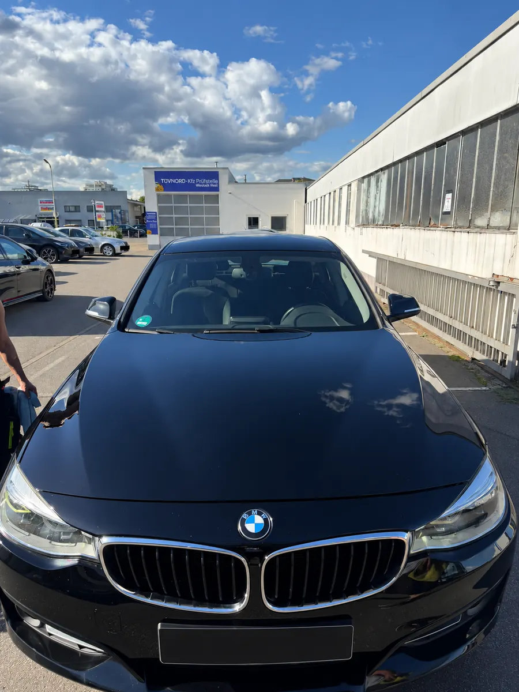
Google-Bewertungen
Was Kunden über uns sagen
★★★★★„Unkomplizierte Kontaktaufnahme mit kurzfristiger Terminvereinbarung. Super freundliches Team. Verwendung von namhaften Waschprodukten zu einem fairen Preis.“
– Dennis S., Google
★★★★★„Absolute Empfehlung! Ich konnte mein Fahrzeug kurzfristig vorbeibringen. Das Ergebnis hat meine Erwartungen übertroffen.“
– Google-Rezension, Google
★★★★★„Vor dem Verkauf unseres Audi Q2 ließen wir eine Komplettreinigung durchführen. Vor allem stach die Motorreinigung heraus.“
– Jürgen K., Google
★★★★★„Sympathischer Familienbetrieb mit top Service bei fairen Preisen! Kurzfristige Anfragen sind auch möglich.“
– Patrick, Google
★★★★★„Sehr guter Service. Habe kurzfristig einen Termin bekommen. Fahrzeugaufbereitung war 1. Klasse. Auto sieht aus wie neu.“
– Marc B., Google
★★★★★„Wir hatten kurzfristig Hilfe wegen ein paar Kratzern benötigt. Hier wurde sofort geholfen – zu einem super fairen Preis.“
– Richard B., Google
Unser Team
Mit Herz fürs Auto. Mit Zeit für Sie.
Hinter jedem gepflegten Fahrzeug stehen Menschen, die mit Freude und Sorgfalt an die Arbeit gehen. Uns verbindet die Begeisterung für Autos und für die kleinen Details, die am Ende den Unterschied machen.
Gute Arbeit beginnt mit Zuhören: Wir nehmen uns Zeit für Ihre Wünsche, besprechen gemeinsam, was Ihr Fahrzeug braucht, und behandeln es so, wie wir es uns für unser eigenes Auto wünschen.
Persönlich. Sorgfältig. Mit Leidenschaft.
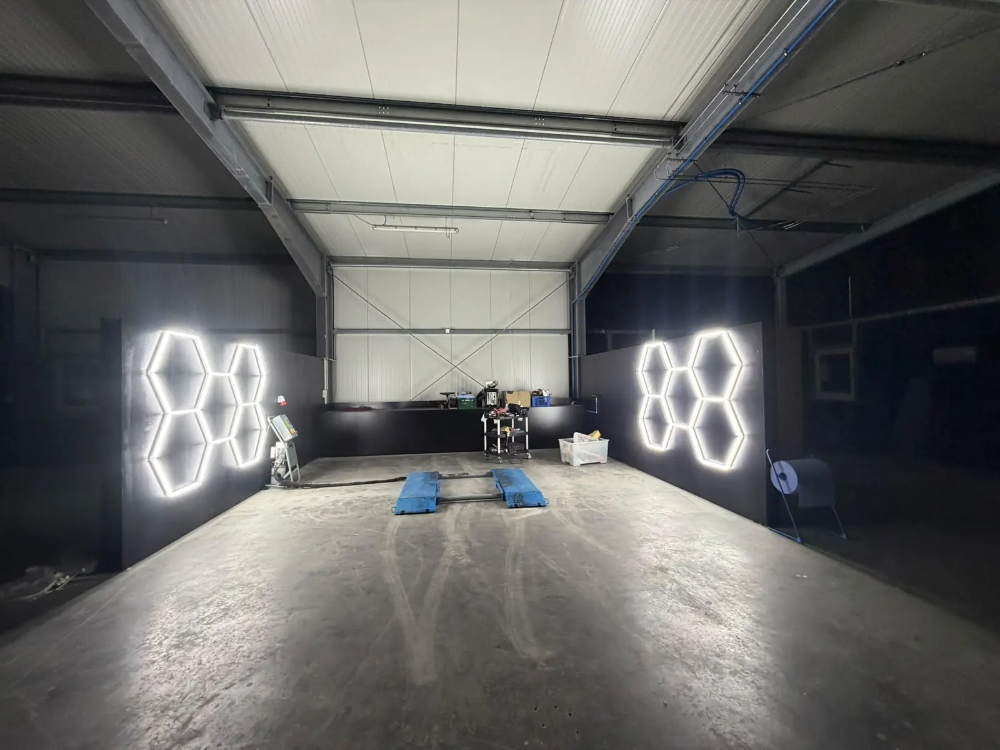
Unsere Halle
Ein Blick hinter die Kulissen
Am neuen Standort im Kleinfeldweg 40 in Walldorf haben wir Platz für sorgfältige Pflege: helle Arbeitsplätze für Fahrzeugpflege und Aufbereitung – und für die Aufmerksamkeit, die jedes Detail verdient.
Bedarf besprechen
Was braucht Ihr Auto? Gemeinsam klären wir Pflegewunsch und Fahrzeugzustand.
Pflege abstimmen
Umfang, Aufwand und Termin werden vorab individuell vereinbart.
Sauber losfahren
Nach der Pflege werfen wir gemeinsam einen Blick auf das Ergebnis.
Was dürfen wir für Ihr Auto tun?
Rufen Sie uns an oder schreiben Sie uns per WhatsApp – wir besprechen persönlich, was Ihr Fahrzeug braucht.